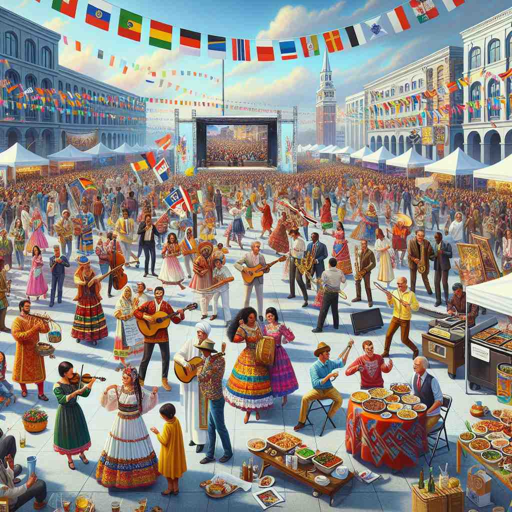

🗝️ adj. relating to the ideas, customs, and social behaviour of a society
🖼️ 在一个热闹的市场，一群游客正在观看当地的传统舞蹈表演。舞者穿着色彩鲜艳的服装，伴随着鼓声和欢呼声翩翩起舞。这个场景展现了'society'的文化，通过舞蹈和习俗让人感受到社区的活力。
🔍 'Cultural'的核心含义围绕'培养'和'社会习俗'展开。想象一个社会如同一个大花园，人们在其中培养思想、习惯和行为方式。这个概念延伸到艺术成就、农业实践，甚至生物培养。记忆时，可以将不同含义想象成这个'文化花园'中的不同植物，都是通过社会'培养'而成长的。

💬 The museum showcases the cultural heritage of different nations.

💬 The festival was a cultural celebration of many different traditions.

💬 The cultural festival attracts many people who celebrate their traditions.
💬 The colorful items in the image reflect the cultural heritage of a vibrant society.
🔗 1. culture: 文化 2. cultivation: 耕种; 培养 3. culturally: 文化地
💡 记住 "cultural" 时，可以联想 "culture" + "al"，即 "文化的"。通过把 "文化" 和表示相关性的 "-al" 联系起来，更容易记住这个单词的意义。
🗝️ adj. relating to the arts and other manifestations of human intellectual achievement
🖼️ 在一个著名的美术馆中，参观者们缓缓地走过展厅，细细欣赏着墙上的油画和雕塑。这些艺术作品代表了人类在审美和创造方面的文化成就，激发了访客对文化的敬仰与思考。
💬 The city has many cultural attractions, including museums and theaters.
❓ 文化常与艺术和智力成就相关
🗝️ adj. relating to the cultivation of plants or rearing of animals
🖼️ 在一个郁郁葱葱的农场，农民正在田间劳作，细心地为果树修剪枝叶，而远处的牧场上，牛羊在悠闲地吃草。这幅画面展示了'cultural'作为一种对植物和动物培养的精心照顾和管理。
💬 Cultural methods of pest control are environmentally friendly.
❓ 源自拉丁语'cultura'，意为'培养'，可引申至农业和畜牧业
🗝️ adj. relating to the development of biological material in a culture medium
🖼️ 在一个现代化实验室，科学家正仔细观察培养皿中的微生物。在显微镜下，小小的生物体正随着时间的推移逐渐成长，这一过程显示了'cultural'在生物培养基中促进生物材料发展的含义。
💬 The scientist examined the cultural characteristics of the bacteria.
❓ '培养'的概念延伸到生物学领域